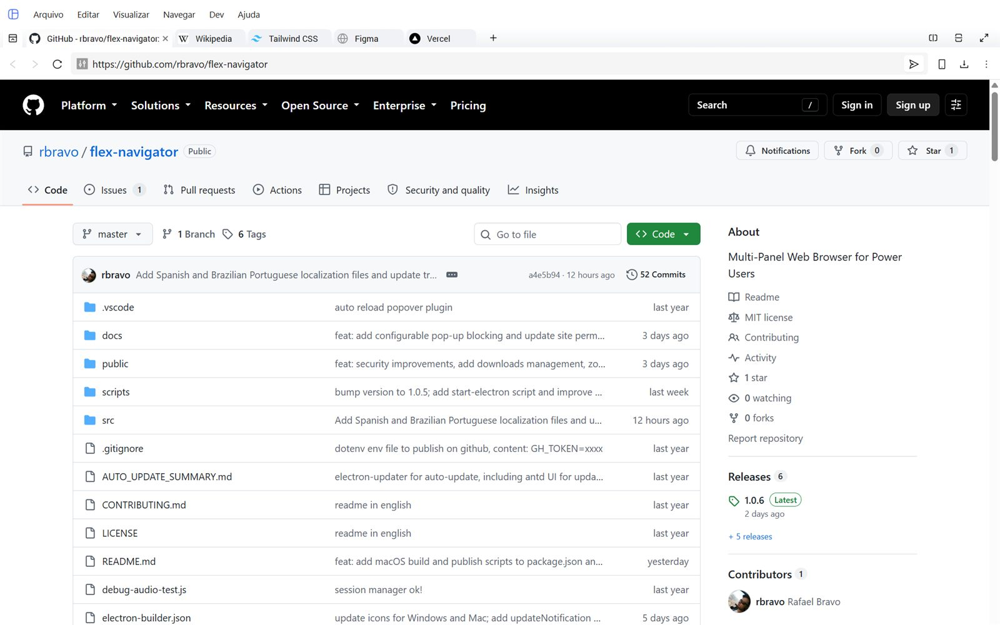
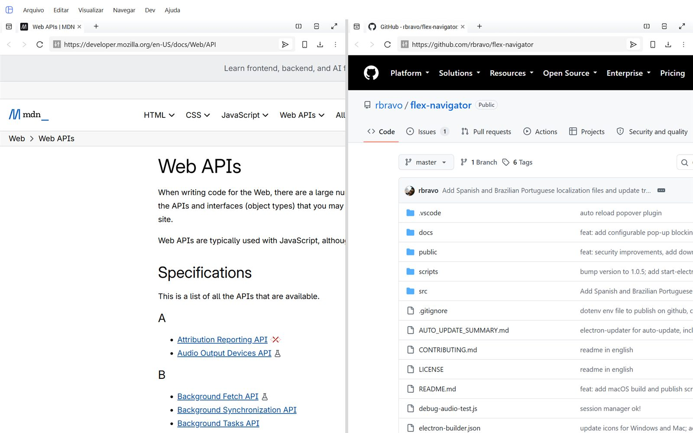
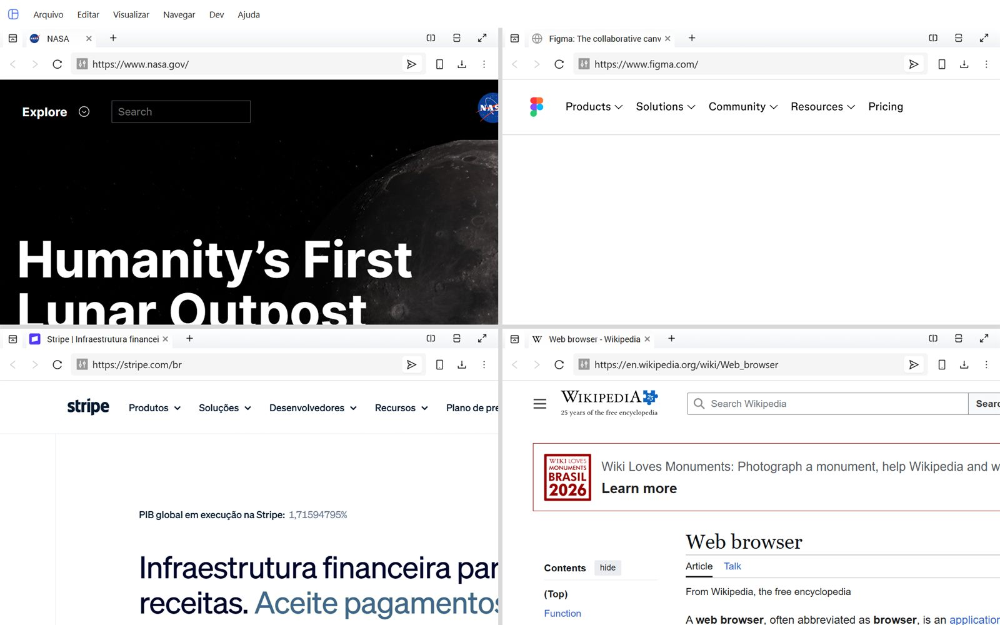
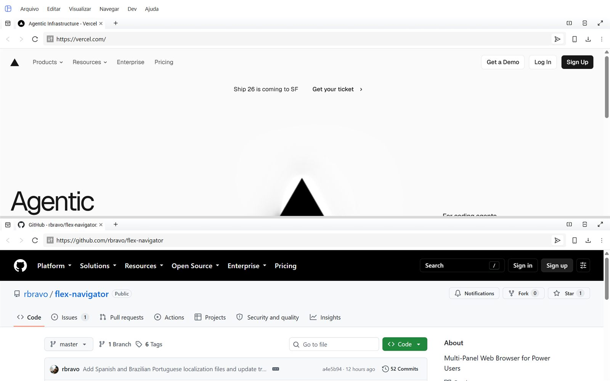
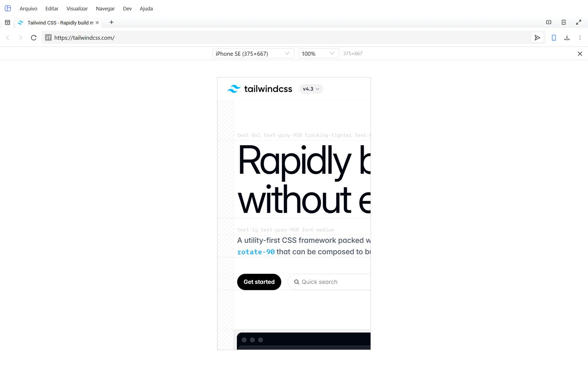
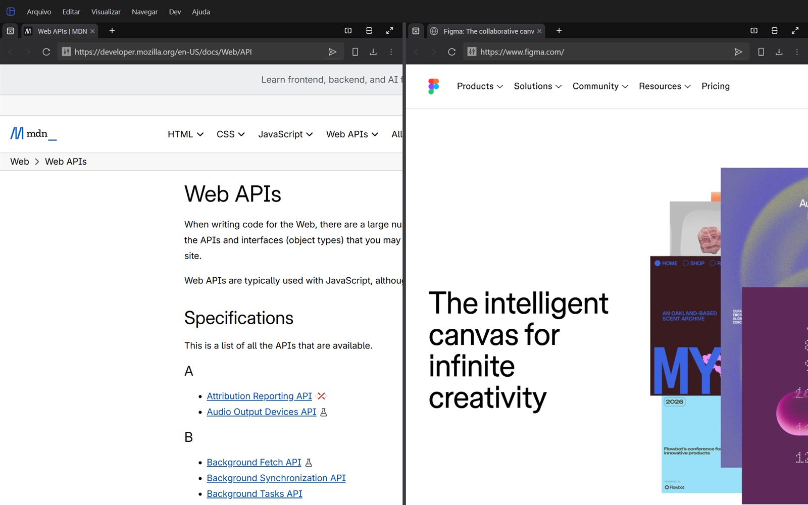
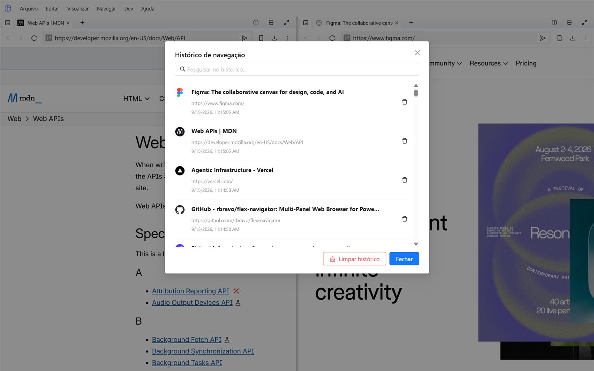

O navegador que se organiza do seu jeito.
Divida a tela em quantos painéis quiser, cada um com suas próprias abas, e navegue em várias coisas ao mesmo tempo — pesquisa, documentação, painel de controle, o que precisar — sem ficar alternando entre janelas.

Um layout para cada tarefa
Arraste as bordas dos painéis para dividir a tela em linhas, colunas ou grades complexas. O layout fica salvo automaticamente, do jeito que você deixou.






Preparado para uso pesado
Tudo que se espera de um navegador de verdade, mais os controles que fazem diferença em um dia de trabalho.
Abas dinâmicas
Crie, feche, duplique, silencie e reordene abas dentro de cada painel.
Localizar na página
Busque termos na página atual com contagem de resultados e navegação entre eles.
Zoom por site
De 25% a 500%, lembrado individualmente para cada origem que você visita.
Histórico de navegação
Busque, abra, remova ou limpe seu histórico — armazenado localmente.
Gerenciador de downloads
Pause, retome, cancele, abra ou mostre o arquivo na pasta — tudo pela barra de URL.
Permissões por site
Controle câmera, microfone, localização, notificações, MIDI e área de transferência por origem.
Bloqueio de pop-ups
Bloqueados por padrão, liberados por site quando você realmente quiser.
Temas adaptativos
Automático, claro ou escuro — inclusive a barra de título e os menus nativos seguem junto.
Shell seguro
Isolamento de contexto, sandbox nas webviews, filtro de navegação e CSP em produção.
Rode no seu sistema operacional
Instalador para Windows, DMG para macOS e AppImage para Linux — grátis, sem conta e sem telemetria.